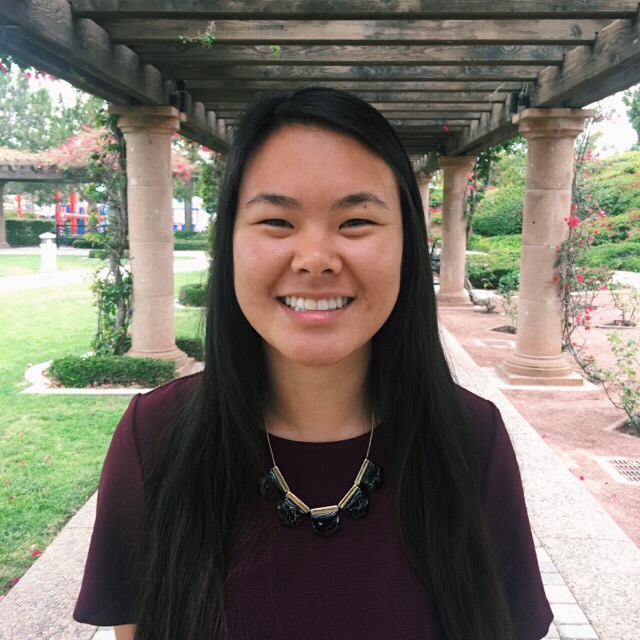
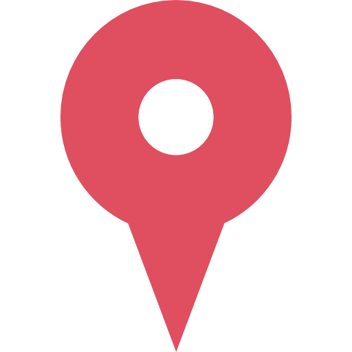

Hey there, I'm Brooke!
Developer. Urbanite. Foodie. Adventurer. Wannable Chef.
 Irvine, CA
I am a fourth year student at University of California, Irvine studying Computer Science with a specialization in Information Systems. My interests are in database manangement, information retrieval, and web searches. I love working with people to create and develop beautiful and feasible technologies. At the end of the day, my primary goal is to create something with my team that is beneficial and long lasting for the users.
Because I'm not much of a web programmer, this personal website was built solely from my interest in wanting to learn web programming. I took up the challenge to learn web programming from scratch by using resources like FreeCodeCamp. I'm looking forward to creating more drafts of my personal website in the future!
When I'm not stressing at the keys of my computer, you can find me testing out a new recipe or exploring the greater Los Angeles/Orange County area for delicious eats and/or beautiful attractions.
Because I'm not much of a web programmer, this personal website was built solely from my interest in wanting to learn web programming. I took up the challenge to learn web programming from scratch by using resources like FreeCodeCamp. I'm looking forward to creating more drafts of my personal website in the future!
When I'm not stressing at the keys of my computer, you can find me testing out a new recipe or exploring the greater Los Angeles/Orange County area for delicious eats and/or beautiful attractions.